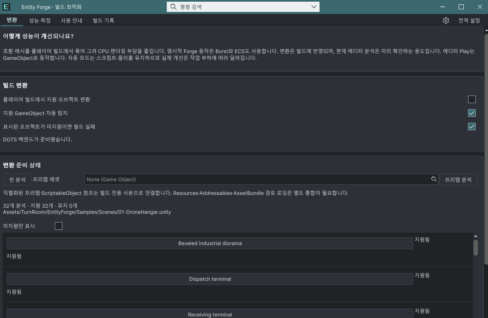

Tracefolio REPORTS & ISSUES
Tracefolio REPORTS & ISSUESEntity Forge 프리팹 변환·상세 분석과 날짜별 CI 빌드 기록
검증 대기안내를 일반 텍스트로 정리하고 상세 목록·프리팹 사본 변환·날짜별 CI 기록을 구현했습니다. 디자인도 카드와 버튼 중심에서 간결한 구획과 행으로 바꿨습니다. 컴파일/저장 코드 검사는 통과했으며 네이티브 빌드는 미검증입니다.
작업 결과
설명 제목을 어떻게 성능이 개선되나요?로 변경하고 세 탭의 일상 안내에서 헬프박스를 제거했습니다. 설명·설정은 나란히 배치하고 큰 카드 테두리를 제거했으며 오브젝트 이름은 일반 텍스트 행으로 표시합니다. 지원 상태·미지원 사유·필터와 스크롤 목록, 프리팹 선택/분석, 빌드 기록 탭을 추가했습니다.
변경 내용
적용 내용
프리팹은 빌드 전용 사본을 만들고 직렬화된 GameObject/Component 및 관련 ScriptableObject 참조를 연결합니다. 원본 경로로 저장하지 않으며 인스턴스는 하나의 공유 DOTS 풀에 등록합니다. 일반 Instantiate 경로를 위해 예제의 이동 개체 120/126/82개도 프리팹 생성 정의로 바꾸고, 씬에 미리 놓은 이동 개체는 제거했습니다. 드론·차량·물리 광석 프리팹을 제공합니다. Resources·Addressables·AssetBundle 직접 경로 로딩은 별도 통합이 필요함을 창과 문서에 명시했습니다.
빌드 기록은 Logs/EntityForge/BuildHistory/yyyy-MM-dd에 고유 ID별 JSON·텍스트·진행 NDJSON으로 저장합니다. UTC/현지 날짜, 씬 처리 수, 프리팹 준비/직접 참조 수, 대상/유지 사유, 템플릿·씬의 변환 수, 조건이 일치하는 예상 프레임 시간 감소율을 기록합니다. 예상값이 없으면 null이며 적용률을 성능 개선율로 쓰지 않습니다. 실제 런타임 속도는 빌드 처리만으로 측정했다고 기록하지 않습니다. CI 경로는 ENTITYFORGE_BUILD_LOG_DIR로 지정하고 폴더를 아카이브할 수 있습니다.

이 화면 이후 카드 테두리·이름 버튼·중복 상태 문구를 수정했습니다. 변경 후 실제 Unity 캡처는 포커스 제한으로 미실행이며 전후 시각 비교 완료로 표시하지 않습니다.
검증
7개 어셈블리 실제 Roslyn 컴파일 통과와 마지막 소스 해시 대조. UI 문구 436개×9언어·치환 인자, 네 탭·이벤트 대상·행 템플릿, 문서 9개/126개 로컬 링크와 파비콘 검사 통과. 씬 3개의 내부 참조와 프리팹 생성 정의 120/126/82개, 미리 배치한 이동 개체 0개 확인.
엔진 독립 로그 저장 코드를 실제 실행해 Unicode/따옴표/제어문자 JSON 왕복, NDJSON 진행률, 음수 예상값, 미측정 null, 적용률과 예측값의 분리, 날짜별 개별 파일, 잘못된 ID 거부를 검사했습니다. 반복 실행 때 테스트가 NDJSON 전체를 단일 JSON으로 파싱해 실패한 것은 마지막 레코드를 개별 파싱하도록 수정 후 통과했습니다. 이는 저장기 픽스처 검사이며 실제 Unity 빌드 기록으로 위장하지 않았습니다. 검사 JSON
Unity 6000.0 공식 BuildPlayerContext와 PrefabUtility API를 확인하고 설치본 참조로 컴파일했습니다.
남은 사항
화면 포커스 금지 조건으로 Unity/플레이어를 실행하지 않았습니다. 실제 빌드의 프리팹 사본 저장·직렬화 참조 연결·ScriptableObject 그래프·동적 등록/해제·CI 종료 상태·실제 원본 보존은 네이티브 실행 미검증입니다. 실제 스크롤/선택/9언어·라이트/다크 레이아웃과 새 성능값도 미검증입니다. 현재 개선율을 새로 측정했다고 보고하지 않습니다. 커스텀 CI는 ForgeBuildOptions.Prepare 또는 CleanBuildCache 옵션을 사용해야 합니다.
일반 안내는 보통 텍스트로, 헬프박스는 주의가 필요한 경우에만 사용한다는 사용자 선호를 기존 전역 지침과 대조해 한 규칙으로 추가했습니다. 설치본·작업용 설정 저장소는 Sync.ps1 Push로 동일성을 검사하고 커밋했으며 이번 main 게시에 포함했습니다. 이미 실행 중인 다른 대화가 자동으로 읽었다고 주장하지 않습니다.
작업 시간
- 제안 시간: 30
45분. 후속 화면 지적으로 디자인 재구성 추가; 43분 시점에 패키지/공개 배포 확인 35분 추가 가능성을 보고했습니다. - 실제로 완료된 시간: 2026-11-02 17:16:03 KST 시작. 17:59:17 KST 구현·비GUI 검사 완료(43분14초). 패키지·공개 배포 확인 별도. 네이티브 실행 검증 완료 시각은 없음.
- XERJ: 실패 — Xerj.ps1 Status에서 노드 미실행 확인. rg·현재 소스·Unity 6000.0 공식 API/설치본 대조로 대체.